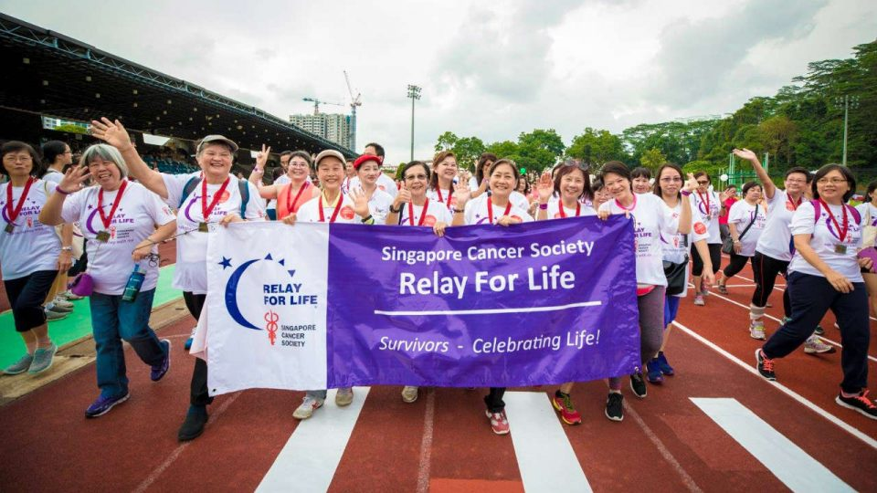
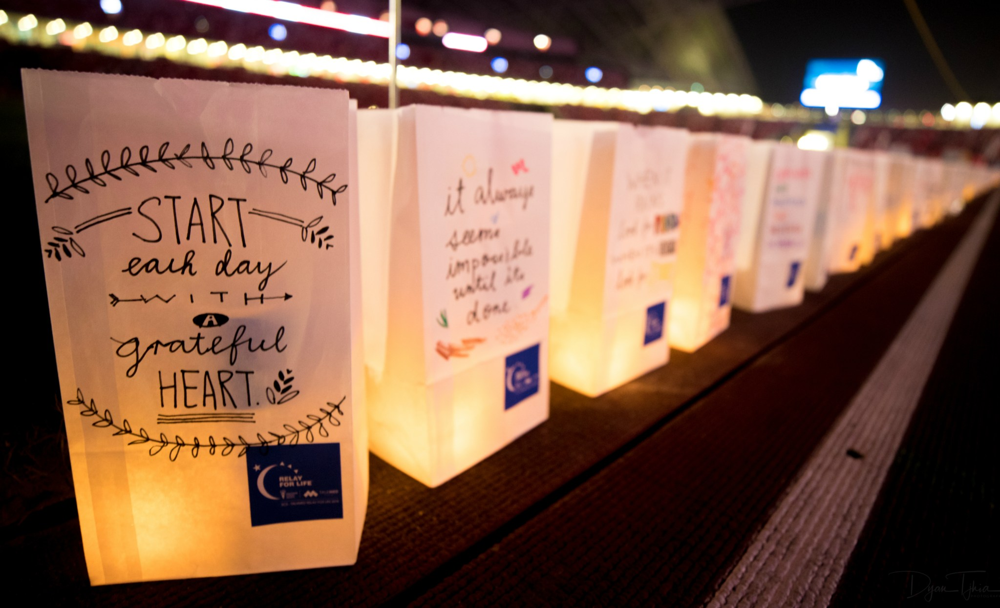
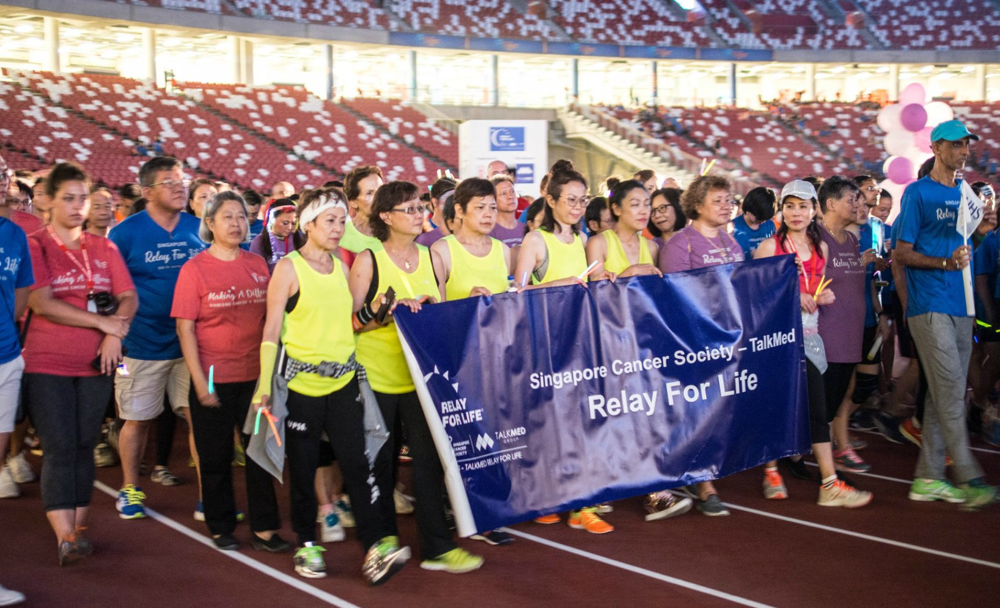

Relay For Life (RFL) is a global movement founded by the American Cancer Society in May 1985. Around 4 million participants partake in RFL globally every year, making it one of the world's largest fundraisers. Since 1985, this event has raised more than $5 billion worldwide to fight cancer.
Singapore Cancer Society (SCS) aims to rally the community together to celebrate the lives of those who battled cancer, remember loved ones lost and fight back against the disease that has taken so much from so many people.
The Singapore Cancer Society-TalkMed Relay For Life is an 15-hour overnight event, symbolising the fight against cancer that never sleeps. This event offers us the opportunity to Celebrate the lives of those who have battled cancer, Remember loved ones lost to this disease and honour those battling cancer, and finally to Fight Back as we all want to put an end to this disease.
  